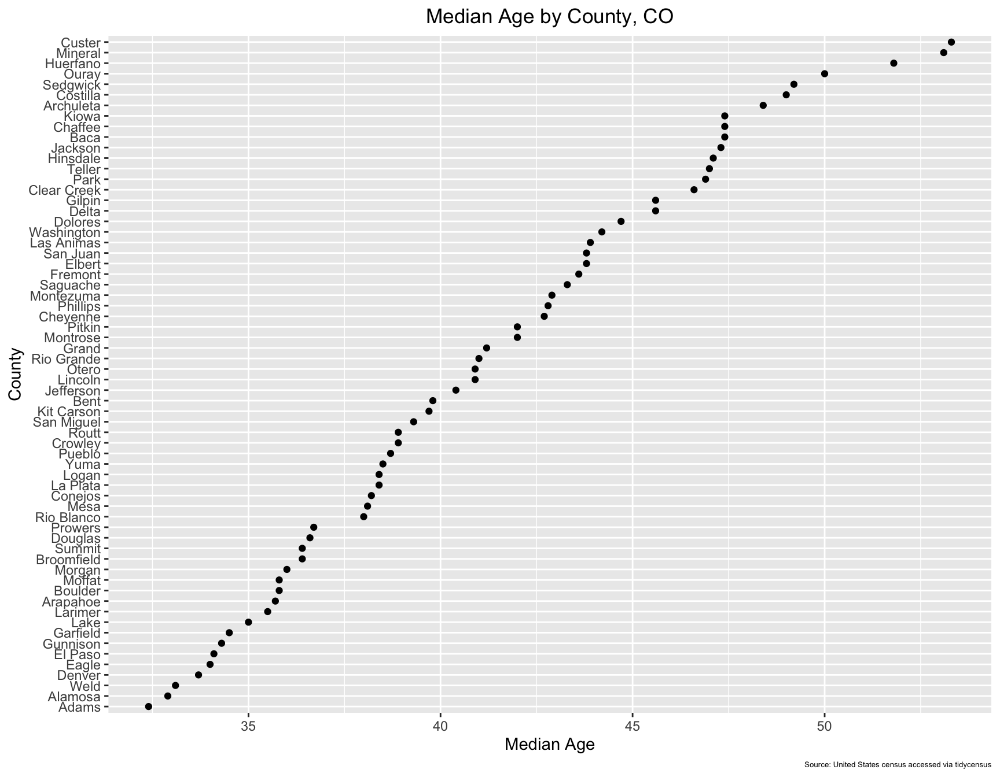
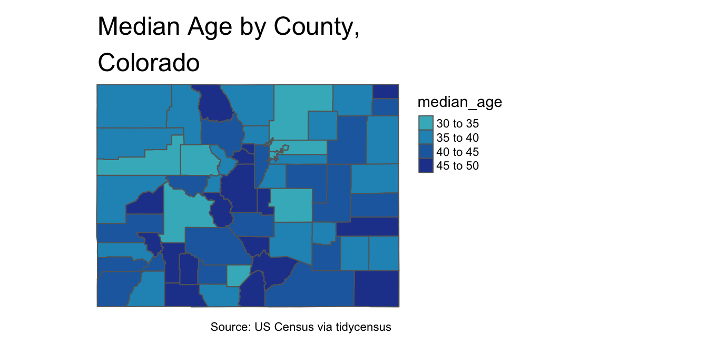

6 Elementary Visualization
6.1 Census data visualization with ggplot
Make a graph that visually conveys the median age in Colorado, by county, based on the 2010 census.
median_age_CO<- get_decennial(geography = "county",
state="CO",
variables = "P013001",
geometry=TRUE,
year = 2010) %>%
rename(median_age=value) %>%
mutate(County=str_remove(NAME, " County, Colorado")) %>%
select(-NAME)View(median_age_CO)| GEOID | variable | median_age | geometry | County |
|---|---|---|---|---|
| 08053 | P013001 | 47.1 | MULTIPOLYGON (((-107.2116 3… | Hinsdale |
| 08061 | P013001 | 47.4 | MULTIPOLYGON (((-102.1985 3… | Kiowa |
| 08063 | P013001 | 39.7 | MULTIPOLYGON (((-102.0498 3… | Kit Carson |
| 08071 | P013001 | 43.9 | MULTIPOLYGON (((-104.4804 3… | Las Animas |
| 08073 | P013001 | 40.9 | MULTIPOLYGON (((-103.7149 3… | Lincoln |
| 08075 | P013001 | 38.4 | MULTIPOLYGON (((-102.9049 4… | Logan |
median_age_CO_cleaned_visualization<-
median_age_CO %>%
ggplot(aes(x = median_age, y = reorder(County, median_age))) +
geom_point()+
labs(title="Median Age by County, CO", x="Median Age", y="County", caption="Source: United States census accessed via tidycensus")+
theme(plot.title=element_text(hjust=0.5),
plot.caption=element_text(size=5))
median_age_CO_cleaned_visualization
6.2 Spatial visualization with tmap
median_age_CO_map<-
tm_shape(median_age_CO)+
tm_polygons(col="median_age",
breaks=c(30,35,40,45,50),
palette="YlGnBu",
midpoint=TRUE)+
tm_layout(frame=FALSE,
main.title="Median Age by County,\nColorado",
main.title.position="left",
legend.outside=TRUE,
attr.outside=TRUE)+
tm_credits("Source: US Census via tidycensus", position=c("right", "bottom"))median_age_CO_map